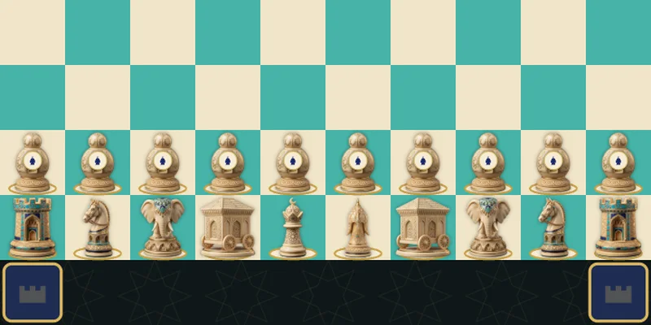

Kale satrancı
El-Âmulî’nin ansiklopedisindeki şatranc el-husûn: 10 × 10 tahta, file benzer debbâbeler ve köşelerde dört kale.

İranlı bilgin Muhammed bin Mahmûd el-Âmulî «Nefâisü’l-fünûn» ansiklopedisine (1340’lar) beş satranç türü aldı. Üçü — uzun, yuvarlak ve «astronomik» — daha önce de biliniyordu; ikisini ilk o anlattı: Timur satrancı olarak bildiğimiz büyük satranç ile kale satrancı, şatranc el-husûn. Vikipedi ona 10 × 10 tahtadaki türlerin en yaygını der.
Tahta ve taşlar
10 × 10 tahtaya dört kare eklenmiştir — husûn, «kaleler», her köşenin yanına bir tane. El yazmaları onları farklı çizer: kimi birinci ve onuncu sıralardaki kale karelerinin dışına, kimi doğrudan arkasına, kimi çapraza, sanki 12 × 12 tahtanın köşelerindeymiş gibi. Ordu tam satrançtakiyle aynıdır: iki fazla piyon ve fil ile şah arasında, fil ile ferz arasında duran iki debbâbe. Ama debbâbe burada başka türlü gider — «ruh gibi, ama çapraz», yani modern fil gibi. Piyonlar ikinci ve dokuzuncu sıralarda durur.
Kale kurtarır
Kale kareleri şahın ayrıcalığıdır: oyuncu şahı bunlardan birine — görünüşe göre rakip tarafındakine — ulaştırabildiği an oyunu berabereye götürebilirdi. Murray böyle sığınaklar eklemenin «el-Âmulî çağının zevkine tam uyduğunu» belirtir: onun yuvarlak satranç sürümünde de merkezde dört kale belirmişti, Timur’un büyük satrancında ise aynı kurallı kale tahtanın yanında durur.
Biz nasıl oynuyoruz
Kaleleri Elliott 275, Viyana ve British Museum 23555 el yazmalarındaki gibi doğrudan kale karelerinin arkasına, şahları da aynı nüshalardaki gibi e1 ve e10’a koyuyoruz. Kaleye yalnız şah ve yalnız rakip yarısında girebilir — oyun hemen berabere sayılır. Çıplak şah hakkında Murray bir şey söylemez; çağdaş yeniden kurguları izleyerek bu kuralsız oynuyoruz. Gerisi şatrançtaki gibidir.